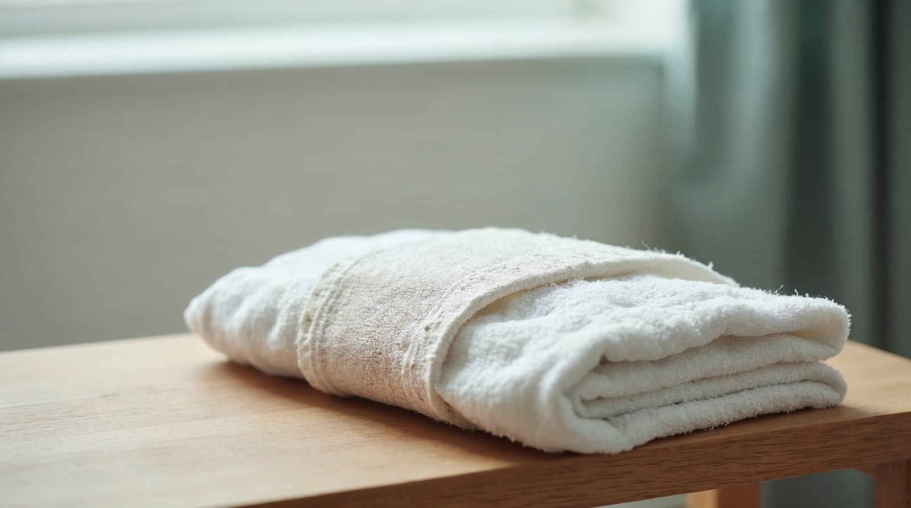
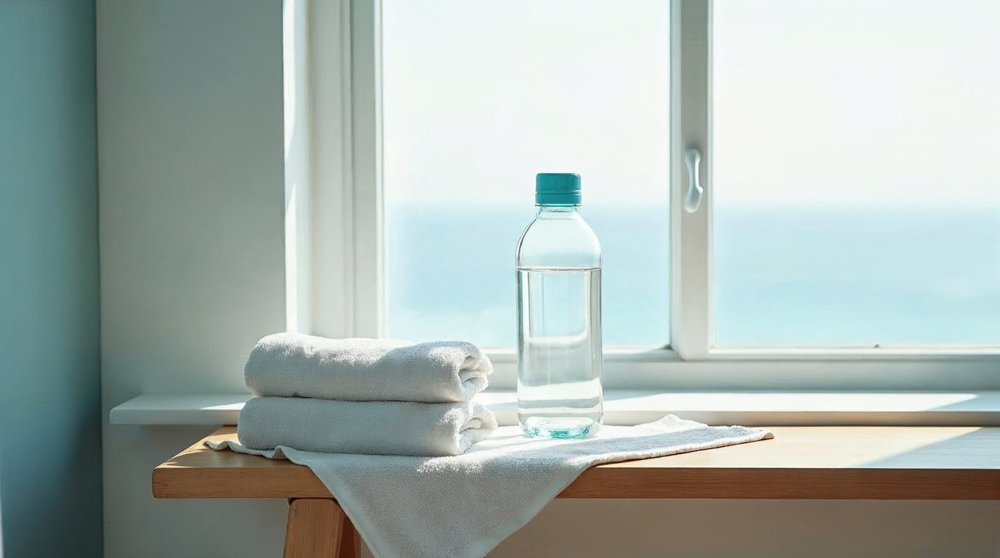
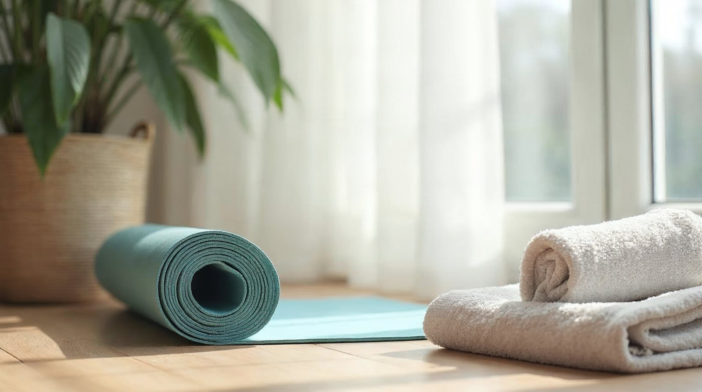
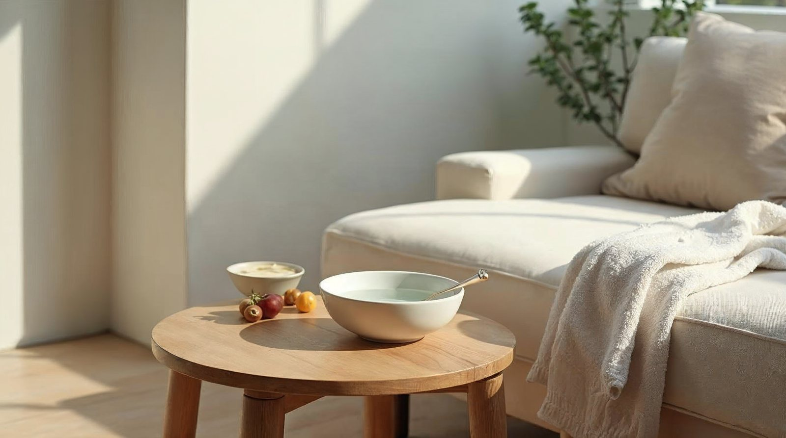
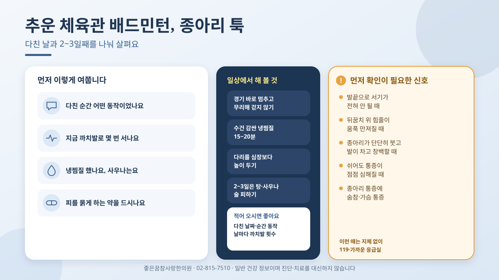

이종호 한의사 감수좋은꿈참사랑한의원 대표원장 (한의사 면허번호 19769)발행 2026-11-27 · 수정 2026-11-27
이 글의 차례
겨울 아침이나 저녁, 난방이 덜 된 체육센터나 학교 체육관에서 몸을 충분히 풀지 않고 배드민턴을 치다가, 뒤로 물러나거나 앞으로 뛰쳐나가는 순간 종아리 뒤가 '툭' 하고 아플 때가 있어요. 누가 공을 던져 맞힌 것 같아서 뒤를 돌아보게 되죠.
그 뒤로 발을 디딜 때마다 종아리 안쪽이 찌르듯 아프고 까치발로 서기 힘들다면, 저는 종아리 안쪽 근육(비복근 안쪽 갈래)이 힘줄로 넘어가는 자리가 일부 찢어진 경우를 먼저 떠올려요. 흔히 '테니스 레그'라고 부르지만 배드민턴, 테니스, 탁구, 풋살처럼 갑자기 방향을 바꾸는 운동에서 40~50대에 자주 생기거든요.
왜 하필 추운 날일까요. 찬 데 오래 둔 고무줄을 갑자기 확 당기면 잘 끊어지잖아요. 덜 데워진 근육도 비슷해요. 그래서 이건 운이 나빴다기보다, 그날 몸이 아직 준비가 덜 됐던 거예요.
이럴 때는 걸으면서 풀겠다며 경기를 이어 가지 말고 바로 멈추세요. 처음 2~3일은 수건으로 감싼 냉찜질과 압박, 다리를 심장보다 높이 올리기로 붓기를 줄이는 것부터예요. 뜨거운 사우나와 술, 세게 주무르기는 처음 며칠 피합니다.
다만 발끝으로 서는 것이 전혀 안 되거나 발뒤꿈치 위 힘줄이 움푹 꺼져 만져진다면 아킬레스건이 끊어졌을 수 있어 당일 정형외과 진료가 먼저예요. 그렇지 않다면 필요할 때 초음파로 다친 범위와 근육 사이에 고인 피를 살피고, 복귀는 단계를 나눠 정해요.
왜 추운 체육관에서 종아리가 '툭' 다치기 쉬울까요
- 종아리 뒤에는 겉의 비복근과 그 아래 가자미근이 있습니다. 비복근은 무릎과 발목을 함께 지나는 근육이라, 무릎을 편 채 발목을 세게 차고 나가는 순간 크게 늘어나며 힘을 써야 합니다.
- 배드민턴에서 뒤로 물러나며 셔틀콕을 받거나, 네트 앞으로 갑자기 뛰쳐나갈 때가 바로 이런 순간입니다. 근육이 늘어나는 동시에 강하게 수축하면서 근육과 힘줄이 이어지는 자리가 버티지 못하고 일부 찢어질 수 있습니다.
- 추운 체육관에서는 근육 온도가 낮아 잘 늘어나지 않고, 신경과 근육의 반응도 느려집니다. 짧게 몸을 풀고 바로 경기에 들어가면 이런 부담이 커집니다.
- 경기 사이 쉬는 동안 땀이 식으며 몸이 다시 차가워집니다. 쉬었다가 다시 시작한 첫 몇 점에서 다치는 일이 적지 않습니다.
- 40대 이후에는 근육과 힘줄이 늘어나는 성질과 회복력이 젊을 때와 달라, 예전처럼 몸을 덜 풀고 뛰면 더 쉽게 다칠 수 있습니다.
- 겨울 동안 걷기를 줄이고 앉아 지내다가 주말에만 몰아서 운동하면, 종아리 근육이 갑작스러운 강도를 감당하기 어렵습니다.
- 연말 송년 경기나 동호회 대회처럼 평소보다 오래, 세게 뛰는 날도 겹칩니다.
- 한의학에서는 근육과 힘줄을 근(筋)으로 보고, 피로와 추위로 근이 메마르고 굳은 상태에서 갑자기 힘을 쓰면 다치기 쉽다고 설명하기도 합니다.

다친 직후에는 이렇게 나눠 봅니다
- 종아리 가운데 안쪽, 무릎 뒤에서 한 뼘쯤 아래가 가장 아프고, 까치발이 아프지만 조금은 된다면 종아리 근육이 다친 쪽을 먼저 생각합니다.
- 발뒤꿈치 위 2~6cm쯤 힘줄이 아프거나 움푹 꺼져 만져지고, 엎드린 채 다른 사람이 종아리를 꽉 쥐었을 때 발이 아래로 움직이지 않는다면 아킬레스건 파열을 의심해 바로 진료를 받습니다.
- 몇 분 동안 딱딱하게 뭉쳤다가 주무르고 늘리면 풀리는 것은 쥐(근육 경련)에 가깝고, 다친 것과 달리 다음 날 걸을 때 찌르는 통증이 크게 남지 않는 경우가 많습니다.
- 다친 일이 없었는데 종아리가 붓고 뜨겁고 누르면 아프다면 다리 깊은 정맥에 피가 뭉친 경우를 먼저 확인합니다.
- 하루 이틀 뒤 종아리 안쪽에서 발목 쪽으로 멍이 내려오는 것은 근육 사이에 고인 피가 아래로 번지는 모습일 수 있어 크게 놀라지 않아도 되지만, 붓기가 계속 커지면 확인을 받습니다.

먼저 이렇게 여쭙니다
- 다친 순간 어떤 동작을 하고 있었는지, 소리가 나거나 맞은 듯한 느낌이 있었는지 여쭙니다.
- 다친 뒤 바로 걸을 수 있었는지, 경기를 계속했는지, 지금 까치발로 몇 번 설 수 있는지 여쭙니다.
- 아픈 자리를 손가락으로 짚어 보시도록 하고, 붓기와 멍이 어디까지 번졌는지 봅니다.
- 다친 뒤 냉찜질이나 압박을 했는지, 반대로 사우나나 뜨거운 찜질, 술자리가 있었는지 여쭙니다.
- 운동 전 몸을 몇 분쯤 풀었는지, 체육관이 얼마나 추웠는지, 평소 운동 빈도는 어떤지 여쭙니다.
- 예전에 같은 쪽 종아리나 아킬레스건을 다친 적이 있는지 여쭙니다.
- 피를 묽게 하는 약, 최근 먹은 항생제나 스테로이드, 고지혈증 약을 드시는지 여쭙니다.
- 요즘 잠과 피로, 연말 술자리가 얼마나 잦은지도 함께 여쭙니다.
일상에서 먼저 해 볼 수 있는 것
다친 날: 멈추고 식히기
- 경기를 바로 멈추고, 아픈 다리로 무리하게 걸어 집에 가지 않습니다. 절뚝일 만큼 아프면 동행의 부축을 받거나 택시를 탑니다.
- 수건으로 감싼 얼음주머니나 냉찜질팩을 종아리에 15~20분 대고, 2~3시간 간격으로 하루 여러 번 반복합니다. 얼음을 피부에 직접 대지 않습니다.
- 탄력 붕대로 발목에서 무릎 아래 방향으로 감아 가볍게 압박합니다. 발가락이 차갑거나 저리면 바로 풀어 다시 느슨하게 감습니다.
- 앉거나 누울 때는 쿠션을 받쳐 다리를 심장보다 높이 둡니다.
- 처음 2~3일은 뜨거운 탕, 사우나, 술, 세게 주무르기를 피합니다. 붓기와 고인 피가 늘어날 수 있습니다.
2~3일째부터: 아프지 않게 조금씩 움직이기
- 신발 안에 1cm쯤 되는 뒤꿈치 깔창을 넣거나 굽이 조금 있는 운동화를 신으면 종아리가 덜 늘어나 걷기가 편해집니다.
- 누운 채 발목을 위아래로 천천히 움직이는 발목 펌프를 한 번에 20번, 하루 여러 번 합니다. 붓기를 빼는 데도 도움이 됩니다.
- 앉은 자세에서 발바닥으로 바닥을 지그시 누르며 5~10초 버티는 운동을 아프지 않은 세기로 10번 합니다.
- 걷는 거리는 통증이 0에서 10 가운데 3을 넘지 않는 범위에서 조금씩 늘립니다. 다음 날 아침 통증이 심해졌다면 하루 줄입니다.
- 붓기가 가라앉고 열감이 없어진 뒤에는 따뜻한 샤워로 종아리를 데우는 것이 편할 수 있습니다.
1~3주: 힘을 되찾기
- 의자를 잡고 양발 까치발 들기를 10번씩 하다가, 통증 없이 되면 천천히 내리는 데 3초를 쓰며 10번 3세트로 늘립니다.
- 양발로 편하면 다친 다리 쪽으로 무게를 조금 더 싣고, 이어서 한 발 까치발로 넘어갑니다.
- 아픈 끝까지 억지로 늘리는 스트레칭은 처음 1~2주는 피하고, 당기는 느낌이 가볍게 드는 정도로만 합니다.
복귀 전 확인과 다음 경기 준비
- 다친 쪽으로 한 발 까치발을 반대쪽과 비슷한 횟수만큼 통증 없이 할 수 있고, 가볍게 뛰기와 제자리 뛰기, 좌우 옆걸음이 편할 때 짧은 경기부터 다시 시작해 봅니다. 다친 정도에 따라 몇 주가 걸리기도 합니다.
- 추운 체육관에서는 겉옷을 입은 채 10~15분 몸을 풉니다. 가볍게 뛰기 3분, 발뒤꿈치 들기 20번, 앞뒤 런지와 옆으로 뛰기, 짧은 스텝 연습을 차례로 하고, 땀이 날 듯할 때 겉옷을 벗습니다.
- 경기 사이에 쉴 때는 겉옷을 걸쳐 몸이 식지 않게 하고, 다시 들어가기 전 1~2분 가볍게 뛰어 데웁니다.
- 실내화 밑창이 닳아 미끄럽다면 바꾸고, 코트 바닥의 먼지를 닦아 미끄러짐을 줄입니다.
초음파로는 무엇을 보나요
- 초음파로는 종아리 안쪽 근육이 힘줄로 넘어가는 자리의 결이 끊겨 보이는지, 얼마나 넓게 다쳤는지를 살필 수 있습니다.
- 겉 근육과 속 근육 사이에 피나 물이 고였는지, 그 양이 어느 정도인지 봅니다. 고인 양이 많다면 병원에서 빼는 처치가 필요한지 상의합니다.
- 반대쪽 종아리의 같은 자리와 비교해 차이를 설명하고, 아킬레스건이 이어져 있는지도 함께 확인합니다.
- 다친 지 며칠 뒤와 몇 주 뒤에 다시 보면 고인 피가 줄어드는지, 다친 자리가 메워지는 흐름을 비교하는 데 도움이 됩니다.
- 다만 초음파만으로 모든 것을 판단하지는 않습니다. 힘줄이 완전히 끊어진 것이 의심되거나 다른 확인이 필요하면 영상 검사가 가능한 병원으로 안내해 드립니다.
- 종아리 깊은 정맥의 혈전이 의심되는 경우에는 혈관 초음파 같은 병원 검사가 먼저입니다.
상황별 예시
- 예를 들어 주말 아침 난방이 막 켜진 체육센터에서 몸을 3분쯤만 풀고 배드민턴 복식을 하던 40대 직장인이, 뒤로 물러나 스매시를 받으려다 종아리가 '툭' 맞은 듯 아프고 절뚝이게 된 경우, 경기를 멈추고 그날부터 냉찜질과 압박, 다리 올리기를 하며 2~3일 뒤 까치발이 얼마나 되는지 확인해 봅니다. 붓기와 멍이 커지면 초음파로 다친 범위를 살펴봅니다.
- 예를 들어 연말 동호회 대회에서 경기 사이 30분을 쉬며 땀이 식은 뒤 다시 들어간 첫 랠리에서 종아리 안쪽이 찌릿하며 아팠지만 끝까지 경기를 마친 경우, 다음 날 붓기와 통증이 더 심해질 수 있어 그날 밤 사우나와 술자리는 피하고 다음 날 걷는 상태를 기록해 둡니다.
- 예를 들어 테니스를 치다 발뒤꿈치 위를 걷어차인 느낌이 들고, 그 뒤로 발끝으로 서는 것이 전혀 안 되며 힘줄 자리가 움푹하게 만져지는 경우에는 아킬레스건 파열 가능성이 있어 당일 정형외과 진료를 먼저 받습니다.
- 예를 들어 종아리를 다친 뒤 2주가 지나 통증은 줄었는데, 까치발을 하면 다친 쪽이 반대쪽보다 훨씬 적게 되는 경우, 경기 복귀를 서두르기보다 한 발 까치발 힘을 되찾는 운동을 1~2주 더 이어 가 봅니다.
자주 하는 오해
- 근육이 뭉친 것이니 세게 주무르고 뜨겁게 찜질하면 풀린다고 여기기 쉽지만, 다친 직후에는 붓기와 고인 피를 늘릴 수 있어 처음 2~3일은 피합니다.
- 걸을 수 있으니 별것 아니라고 생각하는 분도 있습니다. 종아리 근육이 일부 다쳐도 절뚝이며 걸을 수는 있어, 까치발이 되는지와 붓기를 함께 봐야 합니다.
- 아프지 않으면 바로 예전처럼 뛰어도 된다고 여기기 쉽지만, 통증이 줄어든 뒤에도 근력과 늘어나는 힘이 덜 돌아온 상태에서 뛰면 같은 자리를 다시 다치기 쉽습니다.
- 스트레칭을 세게 많이 할수록 회복이 빠르다고 생각하는 분도 있지만, 다친 초기에는 늘리는 것보다 아프지 않은 범위의 가벼운 움직임과 힘 버티기가 먼저입니다.
- 쥐가 난 것과 다친 것은 비슷하다고 넘기기도 하는데, 쥐는 몇 분 안에 풀리고 다음 날 큰 통증이 남지 않는 경우가 많다는 점이 다릅니다.

스스로 점검해 보세요
- 뛰거나 방향을 바꾸는 순간 종아리 뒤가 맞은 듯 '툭' 아팠다.
- 아픈 자리가 종아리 가운데 안쪽, 무릎 뒤에서 한 뼘쯤 아래다.
- 까치발로 서면 아프지만 조금은 설 수 있다.
- 하루 이틀 사이 종아리나 발목 안쪽에 멍이 내려왔다.
- 발뒤꿈치 위 힘줄은 움푹하지 않고, 발끝으로 바닥을 미는 힘이 남아 있다.
- 운동 전 몸을 5분도 풀지 않았고, 체육관이 추웠다.
- 다친 뒤 사우나, 뜨거운 찜질, 술자리가 있었다.
한의원에서 함께 살필 수 있는 경우
- 다친 지 며칠이 지나도 붓기와 멍이 줄지 않아 다친 범위를 확인해 보고 싶은 경우
- 통증은 줄었지만 까치발 힘이 돌아오지 않아 복귀 시기를 정하기 어려운 경우
- 다친 쪽을 아끼며 걷다 무릎이나 허리, 반대쪽 다리까지 불편해진 경우
- 겨울마다 종아리나 아킬레스건을 반복해서 다쳐 몸 상태와 준비 운동을 함께 점검하고 싶은 경우
좋은꿈참사랑한의원에서는 첫 방문 때 다친 순간의 동작과 느낌, 그 뒤 경기를 이어 갔는지, 찜질과 생활을 어떻게 했는지를 먼저 듣습니다. 그다음 다쳐서 오신 분도 맥부터 짚어 몸 전체의 피로와 찬 정도를 살피고, 혀와 배를 함께 보며 잠과 연말 술자리로 지친 정도까지 확인합니다.
이어서 아픈 자리와 붓기, 멍이 번진 범위를 보고, 까치발 서기와 발목 움직임, 아킬레스건이 이어져 있는지를 확인합니다. 필요하면 초음파로 다친 근육의 모양과 고인 피를 반대쪽과 비교해 화면을 함께 보며 설명해 드립니다. 아킬레스건 파열이나 혈전이 의심되거나, 고인 피를 빼는 처치가 필요해 보이면 그런 진료가 가능한 병원을 먼저 안내해 드립니다.
그렇지 않다면 시기에 맞춰 침이나 온열 치료를 쓸지 상의하고, 걷기와 힘 되찾기 운동을 단계별로 함께 정합니다. 다음 진료에서는 지난번 이후 까치발 횟수와 걷는 거리를 이어서 여쭈어 복귀 시기를 함께 가늠합니다.
얼마나 지켜보고 언제 상담할까요
- 다친 뒤 2~3일 동안은 냉찜질과 압박, 다리 올리기를 하며 붓기와 멍이 커지는지 봅니다.
- 3~5일이 지나도 절뚝임이 심하거나 붓기가 계속 커진다면 진찰과 필요하면 초음파로 다친 범위를 확인해 보세요.
- 2주가 지나도 까치발이 거의 안 된다면 복귀를 미루고 상담을 받아 보세요.
- 아래 신호가 있으면 기다리지 말고 바로 진료를 받습니다.

이렇게 기록해 오시면 상담이 쉬워집니다
다친 날의 기억은 며칠만 지나도 흐려져요. 어떤 동작에서 '툭' 했는지, 그날 냉찜질을 했는지가 나중에 다친 범위와 복귀 속도를 가늠하는 단서가 되거든요. 아래 것들을 적어 오시면 진료가 훨씬 빨라져요.
- 다친 날짜와 시각, 다친 순간의 동작(뒤로 물러나기, 앞으로 뛰쳐나가기 등)
- 다친 뒤 경기를 이어 갔는지, 그날 한 냉찜질과 압박
- 날마다 까치발 횟수와 걷는 거리, 통증 점수(0~10)
- 멍과 붓기를 같은 각도에서 찍은 사진
- 예전 종아리, 아킬레스건 부상 기록
- 복용 중인 약(특히 피를 묽게 하는 약, 최근 먹은 항생제)
그러니까 사실은 두 가지를 나눠서 보셔야 해요. '걸을 때 안 아픈 것'과 '다시 뛸 준비가 된 것'은 다른 얘기거든요. 통증이 가라앉았다고 다 끝난 게 아니에요. 그 사이를 건너뛰고 코트에 서시면 같은 자리를 또 다치는 경우가 많아요.
다친 종아리를 살피고 단계를 정하는 건 제가 맡을게요. 대신 하나만 부탁드려요. 괜찮은 것 같아도 같이 정한 단계를 하나씩 밟아 주세요. 딴 건 하시던 대로 편하게 하셔도 돼요. 운동을 그만두시라는 게 아니라, 다시 오래 치실 수 있게 돌아가자는 거예요.
까치발 연습도 처음부터 세게 하기보다 약하게, 오래, 매일이에요. 궁금한 건 오셔서 그냥 편하게 물어보세요. 다시 코트에 서는 날까지 같이 보겠습니다.
이런 증상은 먼저 확인이 필요합니다
- 발끝으로 서는 것이 전혀 안 되거나, 발뒤꿈치 위 힘줄이 움푹 꺼져 만져지는 경우
- 종아리가 점점 단단하게 부풀어 오르고, 발가락이 저리거나 차갑고 색이 창백해지는 경우
이런 신호가 있으면 한의원보다 가까운 병원이나 응급실을 먼저 찾으세요.
관련 글
- 근육을 크게 다친 것 같을 때 초음파로는 무엇을 확인하나요?
- 아킬레스건과 종아리 쪽이 아플 때 체외충격파를 고려하나요?
- 예전에 아팠던 아킬레스건이나 무릎 힘줄이 걱정되는데, 겨울에 쉬던 운동을 다시 시작하기 전 초음파로는 무엇을 살펴보나요?

여쭙는 것
- 다친 순간 어떤 동작을 하고 있었는지, 소리가 나거나 맞은 듯한 느낌이 있었는지 여…
- 다친 뒤 바로 걸을 수 있었는지, 경기를 계속했는지, 지금 까치발로 몇 번 설 수…
- 아픈 자리를 손가락으로 짚어 보시도록 하고, 붓기와 멍이 어디까지 번졌는지 봅니다.
생활에서 해 볼 것
- 경기를 바로 멈추고, 아픈 다리로 무리하게 걸어 집에 가지 않습니다. 절뚝일 만큼…
- 수건으로 감싼 얼음주머니나 냉찜질팩을 종아리에 15~20분 대고, 2~3시간 간격으…
- 탄력 붕대로 발목에서 무릎 아래 방향으로 감아 가볍게 압박합니다. 발가락이 차갑거나…
한의원에서 함께 살필 것
- 다친 지 며칠이 지나도 붓기와 멍이 줄지 않아 다친 범위를 확인해 보고 싶은 경우
- 통증은 줄었지만 까치발 힘이 돌아오지 않아 복귀 시기를 정하기 어려운 경우
- 다친 쪽을 아끼며 걷다 무릎이나 허리, 반대쪽 다리까지 불편해진 경우
먼저 확인이 필요한 신호
- 발끝으로 서는 것이 전혀 안 되거나, 발뒤꿈치 위 힘줄이 움푹 꺼져 만져지는 경우
- 종아리가 점점 단단하게 부풀어 오르고, 발가락이 저리거나 차갑고 색이 창백해지는 경우
한눈에 보는 표
| 구분 | 핵심 |
|---|---|
| 여쭙는 것 | 다친 순간 어떤 동작을 하고 있었는지, 소리가 나거나 맞은 듯한 느낌이 있었는지 여쭙니다. 다친 뒤 바로 걸을 수 있었는지, 경기를 계속했는지, 지금 까치발로 몇 번 설 수 있는지 여쭙니다. |
| 생활에서 해 볼 것 | 경기를 바로 멈추고, 아픈 다리로 무리하게 걸어 집에 가지 않습니다. 절뚝일 만큼 아프면 동행의 부축을 받거나 택시를 탑니다. 수건으로 감싼 얼음주머니나 냉찜질팩을 종아리에 15~20분 대고, 2~3시간 간격으로 하루 여러 번 반복합니다. 얼음을 피부에 직접 대지 않습니다. |
| 한의원에서 함께 살필 것 | 다친 지 며칠이 지나도 붓기와 멍이 줄지 않아 다친 범위를 확인해 보고 싶은 경우 통증은 줄었지만 까치발 힘이 돌아오지 않아 복귀 시기를 정하기 어려운 경우 |
| 먼저 확인이 필요한 신호 | 발끝으로 서는 것이 전혀 안 되거나, 발뒤꿈치 위 힘줄이 움푹 꺼져 만져지는 경우 종아리가 점점 단단하게 부풀어 오르고, 발가락이 저리거나 차갑고 색이 창백해지는 경우 |
자주 묻는 질문
다친 날 바로 따뜻하게 찜질해도 되나요?
다친 직후 2~3일은 붓기와 고인 피를 줄이기 위해 수건으로 감싼 냉찜질을 권합니다. 붓기와 열감이 가라앉은 뒤에는 따뜻한 샤워로 데우는 것이 편할 수 있습니다.
걸을 수 있으면 병원에 안 가도 되나요?
절뚝이며 걸을 수 있어도 근육이 일부 다쳤을 수 있습니다. 발끝으로 서는 것이 전혀 안 되거나 발뒤꿈치 위 힘줄이 움푹하면 바로 진료를 받고, 며칠이 지나도 붓기가 커지면 확인을 받아 보세요.
언제쯤 다시 배드민턴을 칠 수 있나요?
다친 정도에 따라 다르며, 한 발 까치발을 반대쪽과 비슷하게 통증 없이 할 수 있고 가볍게 뛰기와 옆걸음이 편할 때 짧은 경기부터 시작해 보는 것을 권합니다. 날짜보다 이런 기준으로 정하는 편이 같은 자리를 다시 다치지 않는 데 도움이 될 수 있습니다.
다친 종아리에 체외충격파를 받아도 되나요?
다친 직후의 근육에는 체외충격파를 먼저 쓰지 않습니다. 몇 달이 지나도 힘줄 쪽 통증이 남는 경우에 진찰을 거쳐 상담할 수 있습니다.
겨울 체육관에서 다시 다치지 않으려면 무엇부터 바꿀까요?
겉옷을 입은 채 10~15분 몸을 풀고, 경기 사이 쉴 때도 겉옷을 걸쳐 몸이 식지 않게 하는 것부터 해 보세요. 다시 들어가기 전 1~2분 가볍게 뛰어 몸을 데우는 습관도 도움이 될 수 있습니다.
좋은꿈참사랑한의원은 재진 때 지난번 이야기부터 이어서 여쭙니다. 진료시간과 예약은 오시는 길에서 확인하세요.
어디서 상담받을 수 있나요?
좋은꿈참사랑한의원은 서울 동작구 만양로2길 2 신성빌딩 3층·5층(서울 동작구 상도동, 7호선 상도역 3번 출구 근처)에 있습니다. 한의사 3명(이종호 대표원장, 조영기 수석진료원장, 정원영 진료원장)이 진료합니다. 진료시간은 평일 09:30~20:00(점심 13:00~14:00), 토·일·공휴일 09:30~15:00이며, 방문 전 전화로 확인을 권합니다. 예약은 네이버 예약, 카카오톡 상담, 전화 02-815-7510로 받습니다.
이 글은 일반적인 건강 정보이며 개인의 진단이나 치료를 대신하지 않습니다. 증상이 있거나 복용 중인 약이 있다면 진료를 통해 확인하세요. 치료 효과는 개인마다 다를 수 있습니다.
작성 기준: 일반적으로 알려져 있는 건강 정보를 참고해 정리했습니다(대표원장 감수). 증상 기록은 1~2주 동안 하루 1회, 비슷한 시간에 적어 오시면 지난 상태와 비교하기 쉽습니다.